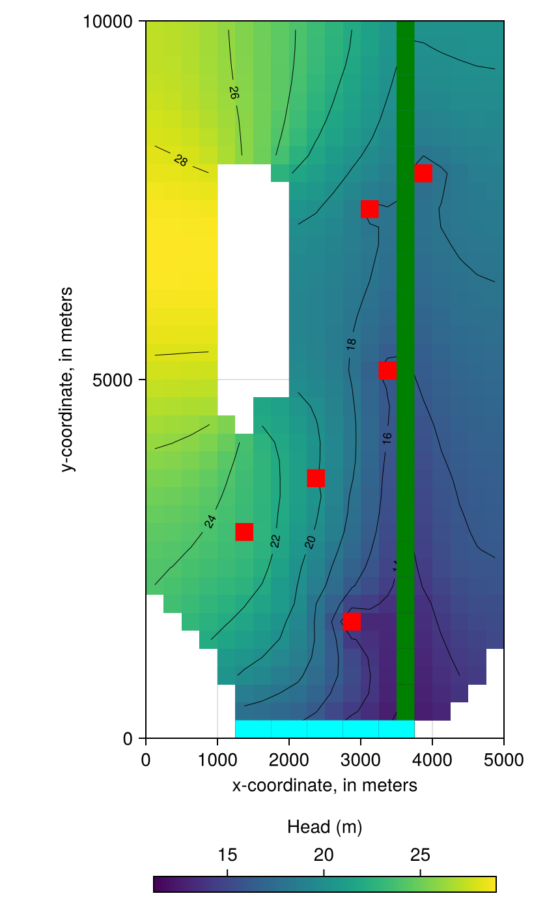
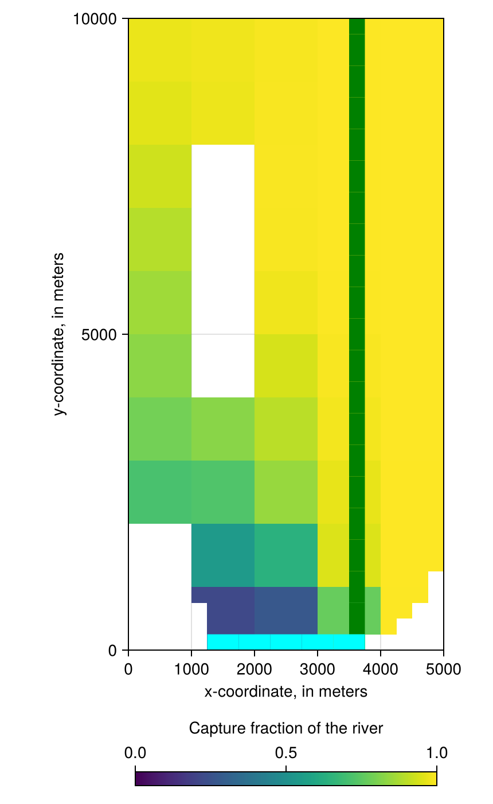

Capture fraction of a river
The capture-fraction analysis of Leake and others (2010): how much of the water a well pumps is taken from a river (captured streamflow) rather than from the other boundaries. The model is one unconfined layer of 40 × 20 cells of 250 m with an irregular bottom, a river running north–south (RIV), recharge (RCHA), six pumping wells and constant heads along the southern edge, solved with the Newton–Raphson formulation (NEWTON UNDER_RELAXATION). Steady state; units are metres and seconds.
The MODFLOW 6 example ex-gwf-capture computes the capture fraction of every cell by running the model again with an extra well in that cell (the cf-1 WEL package, filled through the API of libmf6) and comparing the river leakage with that of the base run. This page does the same with ModflowGPU on a sample of the cells.
Input and the MODFLOW 6 run
ExampleTools (docs/ExampleTools.jl in the repository) takes the input from the released mf6examples.zip, sets the tight closures of the parity tests in the IMS file, and runs MODFLOW 6.8.2. The example only prints its budget, so for the comparison the run is repeated with output control that saves the heads and the budget (and SAVE_FLOWS in the model name file).
using ModflowGPU, CairoMakie
mf6 = example_run("ex-gwf-capture")(dir = "/home/runner/work/ModflowGPU.jl/ModflowGPU.jl/docs/.cache/runs/ex-gwf-capture/tight", mode = "tight", mf6_time = 0.111415513)Copy the input files (not the output) of a run directory to dest.
function copy_inputs(src, dest)
mkpath(dest)
for f in readdir(src)
p = joinpath(src, f)
(isfile(p) && !any(e -> endswith(f, e), (".lst", ".txt", ".hds", ".cbc", ".grb"))) && cp(p, joinpath(dest, f); force = true)
end
return dest
end
saved = joinpath(cache_dir(), "runs", "ex-gwf-capture", "saved")
if !isfile(joinpath(saved, "mf6-time.txt"))
ispath(saved) && rm(saved; recursive = true)
copy_inputs(mf6.dir, saved)
write(
joinpath(saved, "ex-gwf-capture.oc"),
"BEGIN options\n HEAD FILEOUT ex-gwf-capture.hds\n BUDGET FILEOUT ex-gwf-capture.cbc\nEND options\n" *
"BEGIN period 1\n SAVE HEAD ALL\n SAVE BUDGET ALL\n PRINT BUDGET ALL\nEND period 1\n",
)
nam = joinpath(saved, "ex-gwf-capture.nam")
write(nam, replace(read(nam, String), r"BEGIN options\s*\n"i => "BEGIN options\n SAVE_FLOWS\n"; count = 1))
mf6_run(saved)
end
parse(Float64, read(joinpath(saved, "mf6-time.txt"), String))0.113271357The ModflowGPU run
In :double and in :single precision on the CPU, with the default options.
runs = Dict(p => run_modflowgpu(saved, p) for p in (:double, :single))
r = runs[:double].result
r.convergedtrueHeads
The heads of the base run with the river (green), the pumping wells (red) and the constant heads (cyan).
g = read_dis_grid(saved)
h = read_head(open_head_file(r.head_file), 1)
river = budget_cells(g, r.budget_file, "RIV")
wells = [cell_of(g, n) for n in input_nodes(saved, "WEL")]
chd = budget_cells(g, r.budget_file, "CHD")
fig = Figure(; size = (430, 700))
ax = Axis(fig[1, 1]; aspect = DataAspect(), xlabel = "x-coordinate, in meters", ylabel = "y-coordinate, in meters")
hl = layer_values(h, 1)
hl[hl .< g.botm[:, :, 1]] .= NaN
hm = map_heatmap!(ax, g, hl)
map_contour!(ax, g, hl; levels = 10:2:30, color = :black, linewidth = 0.5, labels = true, labelsize = 9)
map_cells!(ax, g, river; color = :green)
map_cells!(ax, g, wells; color = :red)
map_cells!(ax, g, chd; color = :cyan)
limits!(ax, extrema(g.xe)..., extrema(g.ye)...)
Colorbar(fig[2, 1], hm; vertical = false, label = "Head (m)", width = Relative(0.8))
save_figure(fig, "ex-gwf-capture-head")
Capture fraction
For a sample of the cells (every fourth row and column, active cells without constant heads), the model is run again in :double with a well pumping Q = 0.001 m³/s in that cell (the cf-1 package). The capture fraction is the increase of the net river leakage into the aquifer divided by Q; each sampled cell colours the 4 × 4 block around it.
cfdir = copy_inputs(saved, joinpath(cache_dir(), "runs", "ex-gwf-capture", "capture-fraction"))
riv_net(res) = sum(t -> t.name == "RIV" ? t.rate_in - t.rate_out : 0.0, only(res.budgets).terms)
function capture_run(cell)
rec = isnothing(cell) ? "" : "BEGIN period 1\n 1 $(cell[1]) $(cell[2]) -1.0e-3\nEND period 1\n"
write(joinpath(cfdir, "ex-gwf-capture.cf.wel"), "BEGIN options\nEND options\nBEGIN dimensions\n MAXBOUND 1\nEND dimensions\n" * rec)
res = quietly(() -> run_simulation(cfdir; precision = :double, write_output = false))
res.converged || error("no convergence with a well in $cell")
return riv_net(res)
end
base = capture_run(nothing)
chdset = Set((rw, c) for (_, rw, c) in chd)
samples = [(rw, c) for rw in 2:4:g.nrow, c in 2:4:g.ncol if g.idomain[c, rw, 1] > 0 && !((rw, c) in chdset)]
cf = fill(NaN, g.ncol, g.nrow)
t = @elapsed for (rw, c) in samples
v = (capture_run((rw, c)) - base) / 1.0e-3
cf[max(c - 1, 1):min(c + 2, g.ncol), max(rw - 1, 1):min(rw + 2, g.nrow)] .= v
end
cf[g.idomain[:, :, 1] .<= 0] .= NaN
(length(samples), round(t; digits = 1))(44, 2.3)fig = Figure(; size = (430, 700))
ax = Axis(fig[1, 1]; aspect = DataAspect(), xlabel = "x-coordinate, in meters", ylabel = "y-coordinate, in meters")
hm = map_heatmap!(ax, g, cf; colorrange = (0, 1), colormap = :viridis)
map_cells!(ax, g, river; color = :green)
map_cells!(ax, g, chd; color = :cyan)
limits!(ax, extrema(g.xe)..., extrema(g.ye)...)
Colorbar(fig[2, 1], hm; vertical = false, label = "Capture fraction of the river", width = Relative(0.8))
save_figure(fig, "ex-gwf-capture-fraction")
Comparison with MODFLOW 6
The largest head and budget differences of the base run (cells whose MODFLOW 6 head is below the bottom are dry and left out: their head is not unique, see Differences from MODFLOW 6), next to the values of the parity table (model capture_saved, the same saved-output variant), and the wall times (CPU: this build, including compilation for the first run of the session; GPU: the parity table, AMD Radeon RX 7800 XT).
stats = Dict(p => (; cmp = compare_with_mf6(saved, runs[p]), runs[p].time) for p in (:double, :single))
comparison_table("capture_saved", stats)| Preset | max |Δh| (m), this build | max |Δh| (m), parity table | Budget, this build | Budget, parity table | CPU time, this build (s) | GPU time, parity table (s) |
|---|---|---|---|---|---|---|
:double | 4.2e-07 | 4.2e-07 | 2.5e-09 | 2.5e-09 | 0.05 | 0.02 |
:single | 3.8e-06 | 3.8e-06 | 1.1e-06 | 1.1e-06 | 1.59 | 0.39 |
Budget: the largest difference of a budget-file flow or a listing-table rate, relative to the total inflow of its time step.